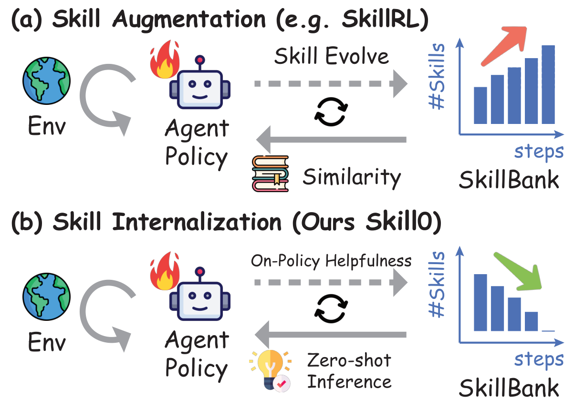
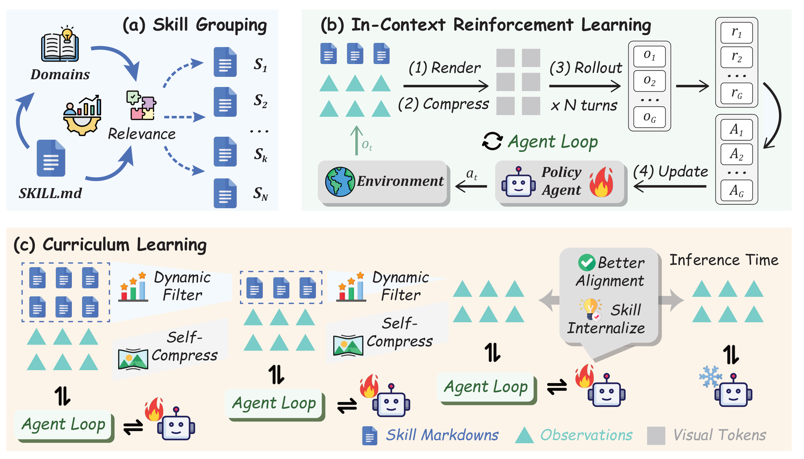
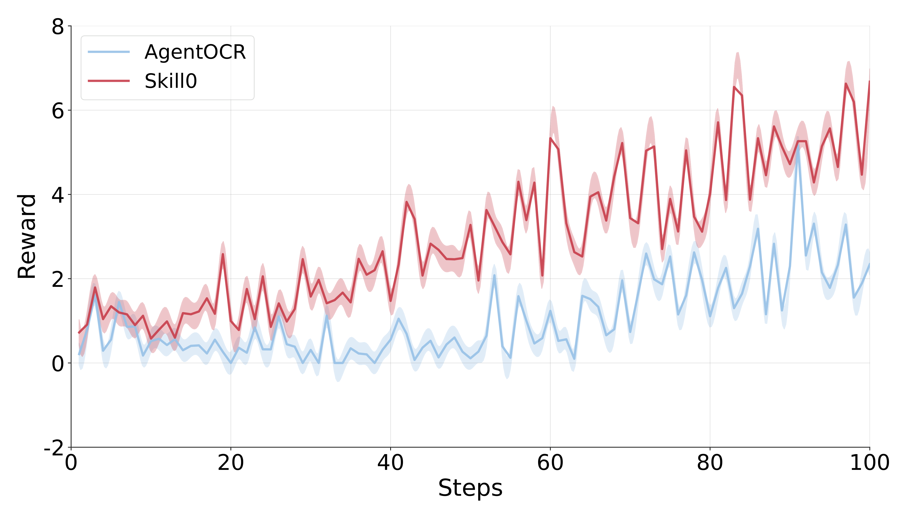
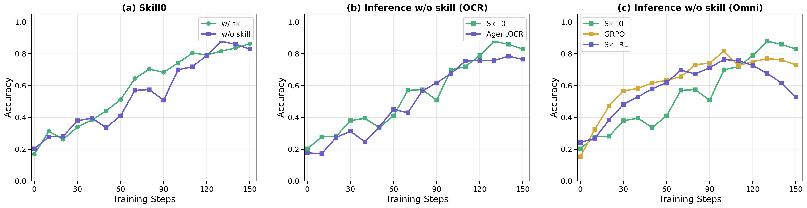
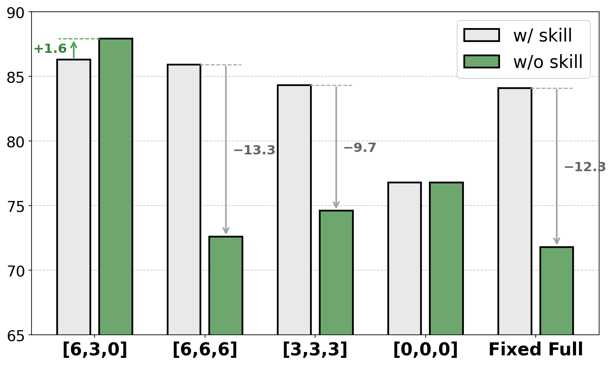

SKILL0：用 In-Context RL + 动态课程，把 Agent Skill 从 prompt「内化」进模型参数
SKILL0: In-Context Agentic Reinforcement Learning for Skill Internalization
①开源贡献 Open-source Artifacts
论文首页脚注与 GitHub 均确认代码已开源：仓库 ZJU-REAL/SkillZero（隶属浙大 REAL Lab）以 Apache-2.0 许可发布，包含 ALFWorld 与 Search 两套环境的完整训练脚本、评测代码、数据预处理与 checkpoint merge 工具。截至解读日（2026-05-30），README 中未提供预训练权重的 Hugging Face 下载链接，WebShop 的脚本在 README 中也未被显式列出（论文正文有用到）。下表区分「论文声称」与「实际可获取」。
| 类型 | 是否开源 | 内容 / 链接 |
|---|---|---|
| 代码 Code | ✔ | github.com/ZJU-REAL/SkillZero · Apache-2.0。含训练脚本（如 scripts/train_alfworld_skillzero_3b.sh）、ICRL + 动态课程实现、ALFWorld / Search 环境安装与数据预处理（Search-R1 / ALFWorld 数据下载）、model merger。 |
| 模型权重 Weights | ✘ | README 未给出 Hugging Face 权重链接（仅有指向本论文的 HF Daily Paper 徽章）；需自行按脚本基于 Qwen2.5-VL-3B/7B 训练复现。 |
| 数据集 Dataset | 部分 | 不发布新数据集；提供脚本对接已有公开数据：ALFWorld（训练 split 来自 GiGPO）、Search-QA（NQ / HotpotQA 等，检索器用 E5、对接 Search-R1 setup）、WebShop（选 1000 任务训练 / 128 任务验证）。 |
| 环境 / Benchmark | 复用公开 | 评测环境均为公开 benchmark：ALFWorld、Search-based QA（NQ/TriviaQA/PopQA/HotpotQA/2Wiki/MuSiQue/Bamboogle）、WebShop。仓库提供 ALFWorld / Search 的接入与 harness。 |
| 项目主页 / Demo | ✘ | 无独立项目主页 / 在线 demo；仅 arXiv + GitHub。 |
注：SkillBank 的初始技能库「initialize from SkillRL」，即技能文件来源于 SkillRL（Xia et al., 2026）的体系；论文附录给出了 ALFWorld / Search / WebShop 三类的 skill 文件示例（Table 8–9）与完整 prompt 模板（Figure 11–13）。
②研究动机与贡献 Motivation & Contribution
背景与问题：inference-time skill augmentation 的三宗罪
「Agent skill」是近一两年随 Claude Code、OpenClaw 等 agent scaffold 兴起的概念——把从历史轨迹里蒸馏出的、可复用的策略 / 原则 / 可执行资源打包成结构化的 skill 文档（通常是 Markdown）。主流用法是 inference-time skill augmentation：推理时从一个 skill bank 里检索相关技能，作为自然语言 guidance 注入到模型每一步的 context 里。这套做法已经形成了「skill 库 + 检索 pipeline + 技能进化」的成熟生态（如 SkillRL、EvolveR）。但论文指出，这种工程上的成功掩盖了三个更根本的缺陷：
- 检索噪声（retrieval noise）：检索回来的技能未必相关，错误 / 无关的 guidance 会污染 agent 的 context，把模型带偏。
- token 开销（token overhead）：注入的技能文本在多轮交互中不断累积，严重挤占 context、限制可扩展性（尤其当任务域变多时）。
- 「执行」≠「学会」：这是最关键的一点——一个照着 prompt 里 skill 描述行动的模型，是在执行技能，而不是掌握技能；能力始终留在 context 里，从未沉淀进模型参数。一旦把 skill 文档拿走，能力归零。
作者用一个类比点题（也是论文卷首语「Skills at training, zero at inference.」）：人类学技能也遵循「先有明确的 instruction 阶段 → 再过渡到可以脱离指令、从记忆中自主执行的内化阶段」。RL 天然适合驱动第二步——让 agent 把有效策略固化为 intrinsic policy，而不是每次都去读 context。
本文的切入点：把检索「训没」，而不是把检索「做好」
已有研究几乎都在问「怎么更好地检索 / 组织 / 注入 skill」；本文反过来问：能不能把 skill 内化进模型参数，让推理时根本不需要检索？但作者也指出朴素的 RL 在两个方向都会失败：(1) 训练时完全不给 skill context，agent 缺乏学习复杂多步行为所需的结构化指导，学不起来；(2) 训练时全程都给满 skill context，模型则永远依赖这份它从未被要求内化的外部知识。因此真正需要的是一种「始于有技能、终于无技能」的训练机制，系统性地把能力从 context 迁移到 parameters。这正是 SKILL0 要做的事。
核心贡献
- 提出 skill internalization 这一显式训练目标。SKILL0 是第一个把「技能内化」形式化为 RL 训练目标的框架，把 agent 从「推理时依赖 skill」推进到「完全自主的 zero-shot 行为」。
- 提出 In-Context Reinforcement Learning（ICRL）。在训练 rollout 中提供结构化 skill guidance，但在推理时完全移除，从而让 RL 优化直接对准「从 context-dependent 执行 → 转为 intrinsic competence」这个过渡过程。
- 提出 Dynamic Curriculum（动态课程）。一种由 helpfulness 驱动的退火（annealing）机制：只有当当前 policy 不再从某个 skill 文件受益时，才把它撤掉；以这种自适应方式替代「按固定时间表撤技能」的死板做法。
- 实证收益显著且高效。在 ALFWorld / Search-QA / WebShop 三个差异很大的 benchmark 上，相比标准 RL baseline 分别 +9.7% / +6.6% / +10.1%，并与「保留 skill」的 SkillRL 等方法竞争甚至更优；同时把每步 context 压到 < 0.5k token，大幅降低推理开销而不牺牲性能。

③方法 Method
SKILL0 的整体流程由三块拼成（见图 2）：(a) Relevance-Driven Skill Grouping——离线把 skill 库按任务类别分组，并为每个 skill 文件配一个专属的验证子任务；(b) In-Context Reinforcement Learning (ICRL)——把交互历史与（被选中的）skill 一起渲染成一张紧凑的视觉图像（visual context）喂给 policy，在 agent loop 里做 RL；(c) Dynamic Curriculum——在线评估每个 skill 文件对当前 policy 的有用性，在一个线性递减的「skill 预算」下逐步撤掉技能，直到推理时完全无技能。下面逐块拆开。

3.1 Agent Loop：把 agent 自动化建成序贯决策问题
给定任务指令 $I$，agent 要生成动作序列 $\{a_1,\dots,a_T\}$ 完成任务。第 $t$ 步，环境 $\mathcal{E}$（在线模拟器或检索引擎）给出文本 observation $o_t$，agent 按 policy 采样动作：
$$ a_t \sim \pi_\theta(a_t \mid I, h_t), \qquad h_t = \{o_1, o_2, \dots, o_t\} $$其中 $\theta$ 是模型参数，$h_t$ 是到 $t$ 步为止的历史。环境随后转移并返回下一 observation $o_{t+1} = \mathcal{E}(o_t, a_t)$，直到任务成功或达到最大步数。
技能库 SkillBank 的结构。沿用 SkillRL（Xia et al.），把可复用的行为知识组织成两层的 SkillBank：(1) General skills 是适用于所有任务类型的通用策略（如探索策略、目标追踪 heuristic）；(2) Task-specific skills 存特定任务类别 $k$ 的专门知识（领域专属的动作序列、前置条件）。技能以目录形式存放：skills/{task_name}/{skill_category}.md，每个 Markdown 文件 $\mathcal{S}_k$ 装一组同任务、同类别的相关技能。整个库 $\texttt{SkillBank}=\{\mathcal{S}_k\}_{k=1}^{N}$ 共 $N$ 个文件。训练时不是按语义相似度检索，而是按 on-policy helpfulness 选出一个子集 $\mathcal{S}\subseteq\texttt{SkillBank}$（含 $m$ 个文件），这个 helpfulness 衡量每个 $\mathcal{S}_k$ 对当前 policy $\pi_\theta$ 在当前训练阶段的学习价值。
3.2 Context Rendering：把历史 + skill 渲染成图像，省 token
当任务域变多时，「累计的技能 + 交互历史」会让 token 成本爆炸。受 Feng et al.（AgentOCR）与 Shi et al.（MemOCR）启发，SKILL0 用一个 context rendering 机制：把文本化的交互历史 $h_t$ 和选中的技能 $\mathcal{S}$ 映射成一张紧凑 RGB 图像，再由 vision encoder Enc 编码、压缩成视觉表征：
其中 $\mathcal{V}_t \in \mathbb{R}^d$ 是喂给 policy 的压缩视觉 context embedding，$c_t \in (0,1]$ 是第 $t$ 步的压缩比（compression ratio）。关键巧思：作者不把 $c_t$ 设为固定超参，而是让 policy 在输出动作 $a_t$ 的同时自己生成 $c_t$：
$$ (a_t, c_t) \sim \pi_\theta(a_t, c_t \mid I, \mathcal{V}_t) $$直觉上，这让模型学会「在信息够用时多压一点、在关键步保留更多细节」，把 token 预算花在刀刃上。（附录 E：文本用等宽字体渲染，并用颜色语义编码区分不同 context 成分——ALFWorld 里 observation 标蓝、action 标红；Search-QA 里 <search> 与 <information> 分色，让 vision encoder 一眼能分清「感知到的状态 / 执行的动作 / 检索到的内容」。）
3.3 In-Context RL：复合 reward 同时优化「任务成功」与「压缩」
为了在 agent loop 里同时激励高效压缩和技能内化，SKILL0 用一个复合 reward（follow Feng et al.）。设 $\mathcal{I}_{\text{succ}}(\tau)\in\{0,1\}$ 是轨迹 $\tau$ 的二值成功指示，复合 reward 定义为：
$$ r_t^{\text{comp}} = \begin{cases} \ln(c_t), & \text{if } \mathcal{I}_{\text{succ}}(\tau)=1,\\ 0, & \text{otherwise,} \end{cases} \qquad \tilde{r}_t = r_t + \lambda \cdot r_t^{\text{comp}} $$解释：只有任务成功时才奖励压缩，避免「为压而压」牺牲任务；$\ln(\cdot)$ 形式反映「压缩比越高、边际收益越小」（递减回报）；$r_t$ 是带技能增强下的任务正确性奖励，$\lambda\ge 0$ 调节「任务性能 vs 压缩效率」的权衡。训练目标是 GRPO 风格的 group-normalized 目标——对每个 query $q\sim\mathcal{D}$，旧 policy $\pi_{\theta_{\text{old}}}$ 采一组 $G$ 条轨迹 $\{\tau_i\}_{i=1}^{G}$：
$$ \mathcal{L}_{\textsc{Skill0}}(\theta) = \mathbb{E}_{\tau_i\sim\pi_{\theta_{\text{old}}}(q),\,q\sim\mathcal{D}} \;\frac{1}{\sum_{i=1}^{G}|\tau_i|}\sum_{i=1}^{G}\sum_{t=1}^{|\tau_i|} \texttt{clip}\big(r_{i,t}(\theta), A_i, \epsilon\big) - \beta\cdot \mathbb{D}_{\text{KL}}[\pi_\theta \| \pi_{\text{ref}}] $$其中 advantage $A_i$ 由组内总 reward $\{\tilde r(\tau_i)\}$ 归一化得到，$r_{i,t}(\theta)=\pi_\theta(\tau_{i,t}\mid q,\tau_{i, 核心思想：随训练推进，对外部技能的依赖要被「受控地退火」，避免 context 空间发生突变（distribution shift）。把课程切成 $N_S$ 个阶段，第 $s$ 阶段的 skill 预算 $M^{(s)}$ 做线性衰减： 这把每阶段的技能上下文减少量界定在 $M^{(s)} - M^{(s+1)} \approx \tfrac{N}{N_S-1}$。约束 active skill 集合 $\mathcal{S}^{(s)}$ 的变化，就限制了渲染视觉 context $\mathcal{V}_t^{(s)}=\texttt{Enc}(h_t,\mathcal{S}^{(s)};c_t)$ 的偏移，从而保证 policy 分布平滑过渡，安全地走到完全自立的状态 $\mathcal{S}^{(N_S)}=\emptyset$（最后一阶段无技能）。 课程分两相协作（见 Algorithm 1）： 然后做三步：Filter（只保留 $\Delta_k > 0$、即仍有正向帮助的技能）→ Rank（按 $\Delta_k$ 降序排）→ Select（取 top-$M^{(s)}$）。这就形成一个自配速（self-paced）的课程：一个技能一旦被 policy 内化，它的 $\Delta_k$ 自然趋于 0，就会被正向过滤自动淘汰——预算 $M^{(s)}$ 只是上界，真正的撤除速度由模型「学会了没」决定。3.4 Adaptive Curriculum：线性退火地撤掉技能
$$ \Delta_k(\mathcal{S}) := \texttt{Acc}(\pi_\theta, \mathcal{T}_k, \mathcal{S}) - \texttt{Acc}(\pi_\theta, \mathcal{T}_k, \mathcal{S}\setminus\{\mathcal{S}_k\}) $$
④实验评估 Evaluation
评测设置
- Benchmark： ALFWorld（文本版 embodied 家务游戏，3827 任务实例，6 类活动：Pick / Look / Clean / Heat / Cool / Pick2）考察具身式多步规划； Search-based QA（single-hop：NQ / TriviaQA / PopQA；multi-hop：HotpotQA / 2Wiki / MuSiQue / Bamboogle）考察检索增强的多跳推理，其中 NQ、HotpotQA 为 in-domain，其余为 out-of-domain； WebShop（真实网购式交互环境，128 个固定验证任务）考察长程网页导航与按需购买。
- 对比基线：in-context skill prompting 方法（文本 / OCR 历史的 Few-Shot、AgentOCR、EvolveR、SkillRL）；RL 方法（GRPO）；ALFWorld 还额外比 prompt 类与 memory 类（ReAct、Reflexion、Mem0、ExpeL、MemP、MemRL、SimpleMem、RLOO）；Search-QA 还比 Search-o1 / Search-R1 / ZeroSearch / O²-Searcher / ParallelSearch / StepSearch，以及闭源 GPT-4o、Gemini-2.5-Pro。
- 指标：success rate（成功率，%，越高越好）、Score / Accuracy（WebShop，越高越好）、以及每步平均 context token 成本（k/step，越低越好）。
主要结果
下表摘自原文 Table 1（ALFWorld + Search-QA 的平均列与每步 token 成本）。标记说明：† 表示「带 skill augmentation 验证」的方法；* 表示「编码视觉 context、token 开销降低」的方法。SKILL0 在推理时不给任何 skill，但仍取得最高或并列最高的成功率，且 token 成本最低。
| 方法（Qwen2.5-VL-3B） | ALFWorld Avg↑ | ALFWorld Cost↓ (k) | Search-QA Avg↑ | Search-QA Cost↓ (k) |
|---|---|---|---|---|
| Zero-Shot | 15.2 | 1.21 | 15.9 | 0.48 |
| Few-Shot † | 44.1 | 2.30 | 14.6 | 0.36 |
| GRPO | 79.9 | 1.02 | 36.4 | 0.61 |
| AgentOCR * | 78.2 | 0.38 | 34.2 | 0.36 |
| EvolveR | 44.1 | 1.89 | 38.2 | — |
| SkillRL † | 82.4 | 2.21 | 38.9 | 0.87 |
| SKILL0 * | 87.9 | 0.38 | 40.8 | 0.18 |
| 方法（Qwen2.5-VL-7B） | ALFWorld Avg↑ | ALFWorld Cost↓ (k) | Search-QA Avg↑ | Search-QA Cost↓ (k) |
|---|---|---|---|---|
| GRPO | 81.8 | 0.95 | 41.9 | 0.73 |
| AgentOCR * | 81.2 | 0.43 | 40.1 | 0.36 |
| SkillRL † | 89.9 | — | 47.1 | — |
| SKILL0 * | 89.8 | 0.41 | 44.4 | 0.34 |
WebShop（128 任务，全部用视觉 context）。3B 上 SKILL0（无技能推理）得 Score 78.6 / Acc 66.4%，比 AgentOCR（75.2 / 56.3）高 +10.1 acc，token 仅 0.49k；7B 上 Score 85.1 / Acc 74.2%（AgentOCR 78.6 / 59.3，+14.9 acc），token 0.46k。而带技能的 Few-Shot 推理要花 0.78–0.91k token，SKILL0 用近一半的 token、却拿到 3× 于 Few-Shot 的准确率。
怎么读这些数字：
- 提升幅度。对标准 RL baseline（GRPO / AgentOCR），SKILL0 在三个 benchmark 上分别 +9.7（ALFWorld）/ +6.6（Search-QA）/ +10.1（WebShop，acc）。注意这是在推理时不给任何 skill 的前提下取得的——说明能力确实被「内化」进了参数。
- 对 skill-augmented 方法的追平 / 反超。3B 上 SKILL0（87.9 / 40.8）已超过全程带技能的 SkillRL（82.4 / 38.9）；7B 上 ALFWorld 与 SkillRL（89.9）基本打平（89.8），Search-QA 略低于 SkillRL（44.4 vs 47.1）但仍优于其余所有 RL / search 方法。WebShop 上 SKILL0 全面占优。
- Few-Shot 的天花板。显式给 skill prompt（Few-Shot）相比 Zero-Shot 只有有限提升，印证了「LLM 在缺乏充分探索时，并不能真正用好 skill 描述」——这正是 SKILL0 用 RL 探索去补的短板。
- token 效率是另一条主线。SKILL0 每步仅 0.38k（ALFWorld）/ 0.18k（Search-QA）/ 0.49k（WebShop）token；相比文本 / skill 类的 SkillRL（ALFWorld 2.21k、Search-QA 0.87k）便宜 3–5×。在 WebShop 上更是「省近 2× token、却给到 3× 于 Few-Shot 的准确率」。
- 更广的对比（Table 6/7）。ALFWorld 上 SKILL0（89.8，7B）大幅超过 memory 类的 ExpeL(46.3)/Mem0(54.7)/MemRL(21.4)，也超过闭源 GPT-4o(48.0)、Gemini-2.5-Pro(60.3)。Search-QA 上（44.4，7B）超过 Search-R1(38.5)/ZeroSearch(39.1)/EvolveR(43.1)，在 out-of-domain 的 Bamboogle 上尤其强（63.7 / 66.9），显示出对未见推理任务的泛化力。


消融 / 分析
(1) Skill Budget $M$ 的形状最关键。$N_S=3$ 时 ALFWorld 的预算被算成 $[6,3,0]$（线性递减到 0）。把它换成不同形状对比（图 5）：

Fixed Full（不过滤）掉 −12.3，$[3,3,3]$ 掉 −9.7；$[0,0,0]$（从头不给技能）则两者持平但绝对值低（≈76.8，学不充分）。读法：这张图是全文最有说服力的证据——「w/ vs w/o skill 的差」直接量化了模型对外部技能的依赖度。只有「始于有技能、线性退火到无技能」的课程，才能把这个差做到负向消失甚至反转为正（+1.6），即模型脱离技能后反而更好；其余设置要么没学到内化（差很大）、要么学不充分（绝对值低）。Figure 8 进一步显示：静态低预算 $[3,3,3]$ 限制了早期探索→训练不稳、峰值低；而本文的课程在「skill-free 推理」设定下持续优于 Fixed Full。
(2) Dynamic Curriculum 的三步缺一不可（Table 3）。完整的 Filter & Rank & Select 是唯一在撤技能后还正迁移（Δ=+1.6%）的设置（w/o skill 87.9 vs w/ skill 86.3）；去掉 Filter（把预算内技能全用上）引入噪声、掉 2.7%；去掉 Rank（随机选技能）则灾难性崩塌 −13.7%（跌到 62.9%）。这证明「只保留真正有用的技能」对稳定学习、避免对 prompt 的肤浅依赖至关重要。
(3) Helpfulness 的「先升后降」轨迹（Figure 6）。所有子任务的 $\Delta_k$ 都呈现一致的 rise-then-fall：早期 policy 还不会用技能 prompt，$\Delta_k$ 低；中期学会「把技能落到动作上」，$\Delta_k$ 升；后期动态课程逼着 policy 把技能内化进参数，对外部 prompt 的依赖下降，$\Delta_k$ 收敛回 0。这条曲线从经验上验证了 ICRL 与课程学习的协同机制——skill 是有效但短暂的脚手架。
(4) Validation interval $d$（Table 4）。$d=5$ 在 Search-QA 上略有增益但算力开销大得多；$d=20$ 明显变差（ALFWorld 78.1 / Search-QA 42.3）；$d=10$ 是性能 / 效率的最佳折中。
⑤洞见 Insights
- 「技能」应该是训练时的脚手架，而不是推理时的拐杖。SKILL0 把整个领域的默认假设（推理时检索 + 注入 skill）反过来了——技能的正确归宿是被 RL「用掉、然后撤掉」，最终沉淀进参数。helpfulness 的 rise-then-fall 曲线，几乎就是「脚手架」这个比喻的实证。
- 用「w/ skill 减 w/o skill 的差」当退火信号，是一个很通用的方法论。它把抽象的「模型学会了没」变成一个可测量、可排序、可过滤的标量 $\Delta_k$，从而实现 self-paced 课程：撤除速度由模型实际掌握程度决定，而非死板的时间表。这个「以边际有用性驱动退火」的思路，可迁移到任何「训练时有辅助信息、希望推理时去掉」的场景（如 hint、CoT 示范、外部 memory）。
- 把 context 渲染成图像 + 让 policy 自生成压缩比，是一条被低估的省 token 路线。SKILL0 借 AgentOCR 的视觉压缩把每步 context 压到 <0.5k token，且压缩比由模型自适应决定。「内化」与「视觉压缩」两件事叠加，才使得「推理时既省 token 又不掉点」成为可能——这对长程、多域 agent 的部署成本是实打实的利好。
局限与未来
论文自陈两点局限：(1) SKILL0 的效果依赖初始 SkillBank 的质量——技能库本身要够好（本文直接 initialize from SkillRL），否则没东西可内化；(2) 离线的 relevance-driven skill grouping 在迁移到新任务域时需要重新分组（re-partition），不是即插即用。我个人补充几点判断：方法重度绑定「视觉 context 渲染」这条技术路线，因此需要带 vision encoder 的多模态骨干（Qwen2.5-VL），纯文本 LLM 想直接套用 ICRL 还需要另想 context 压缩方案；此外实验主要在 3B/7B 与 ≤180 训练步、3 个 benchmark 上，更大模型 / 更长训练 / 更开放任务下「内化」能否同样干净地发生，仍待验证；helpfulness 评估需要在 w/ 与 w/o 两种条件下各跑一遍验证子任务，本身有额外算力开销（$d$ 的取舍即源于此）。
与相关工作的关系
（以下基于本文自身的论述。）vs. Agent Skill / skill-augmentation（SkillRL、EvolveR、SkillNet、SkillBench 等）：这些工作聚焦技能的抽取、组织、检索、进化，技能始终活在推理 context 里；SKILL0 则把「技能能否被内化进参数」这条几乎无人探索的路线作为主线，推理时彻底不用技能。vs. memory-based 方法（Mem0 / ExpeL / MemP / MemRL / SimpleMem）：它们把（压缩后的）历史轨迹存进外部数据库供决策时查阅，仍是「外部记忆 + 运行时检索」；SKILL0 内化后无需外部存储。vs. 朴素 agentic RL（GRPO / Search-R1 等）：本文指出朴素 RL 在「全程无技能」与「全程满技能」两端都会失败，其贡献正是中间那条「始于技能、退火到无技能」的训练机制。技术血缘：视觉 context 压缩与复合 reward 来自 AgentOCR（Feng et al.）/ MemOCR（Shi et al.），优化用 GRPO（Shao et al.），初始技能库来自 SkillRL（Xia et al.）——SKILL0 把这些组件重新组织成一个「skill internalization」的新目标。作者把它定位为「从 tool-augmented 走向真正自给自足的自主 LLM agent」的一种新范式。